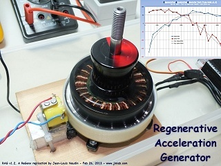

Cliquez ici pour la version FRANCAISE 
I am very gratefull to Thane C. Heins for his encouragements and his very helpfull technical support which have conducted me to succeed in the replication of the ReGenX of Potential Difference Inc.
February 26, 2013 - DLE-TEST07 : After the preliminary test of the version 1.0, and according to the Thane C. Heins advices, I have improved my replication of my Regenerative Acceleration Generator. So, you will find below the full tests and measurements that I have conducted on the RAG (Regenerative Acceleration Generator) v1.2.

The motor used here is a low Kv (Kv=231) brushless outrunner motor. On its outside are fixed 18 neodymium magnets. Their magnetic poles are placed radialy N-S-N-S-... In this version, I have used a smaller coil (in size and with a lower inductance) but with a sufficient time constant (Tc=1ms) required to work properly with this motor.
The measurement of the turn speed is done with a speed sensor (RPM = 6.55 * f) mounted separately from the secundary coil.

Below the setup of the TEST-DLE07 :

The turn speed of the ReGenX is controlled with an Electronic Speed Controller (ESC). The load connected on the secundary coil is a NON INDUCTIVE 0.1 Ohm resistor Mundorf MR10. The turn frequency of the RAG is measured via the speed sensor with a digital frequency meter (a Fluke multimeter). The DC current at the input is measured with a digital multimeter.
MEASUREMENTS RESULTS on the RAG v1.2 :
I have conducted a full serie of mesurements with and without the load connected on the secundary coil along the full working RPM range of the brushless motor. Below the full datas of the measurements that I have conducted :

We can observe that at low RPM the RAG works as a common motor/generator : when a load is connected on its secundary, its turn speed drops and the input current increases a bit.

At a certain speed, when the secundary is loaded, the RPM of the motor INCREASES and the input current DROPS.

It is important to notice that the ferromagnetic material of the secundary core doesn't heat up (loaded or unloaded) along the full range of the turn speed.

Below the full datas curves about the tests on the RAG v1.2.

Comments :
These full tests of the RAG (Regenerative Acceleration Generator) v1.2, a replication of the ReGenX from PDI, fully confirm the observations and the measurements conducted by Thane C. Heins.
Below, the full video of the tests conducted on the RAG v1.2
Documents and references (courtesy of Thane C. Heins CEO of PDI Canada ) :
REGENERATIVE ACCELERATION GENERATOR TECHNOLOGY, BASIC PHYSICS by Thane C. Heins PD inc.
The patent of the motor/generator "Perepitea" of Thane C. Heins
TEST SUIVANT